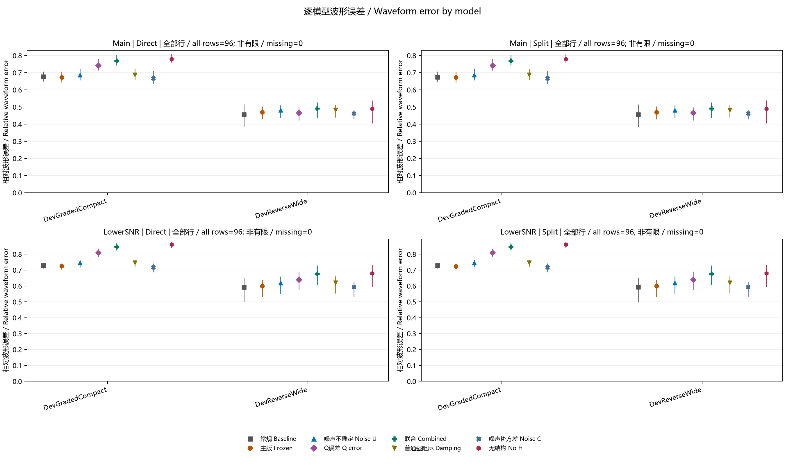
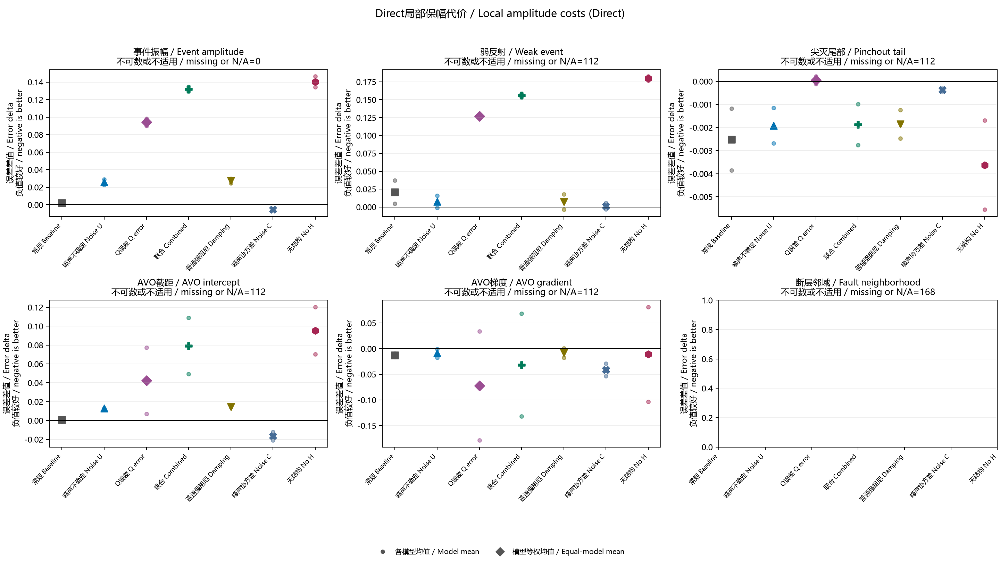
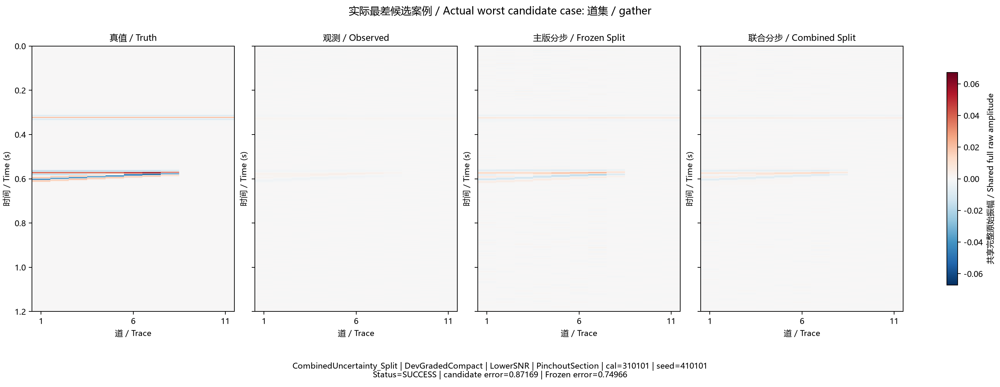
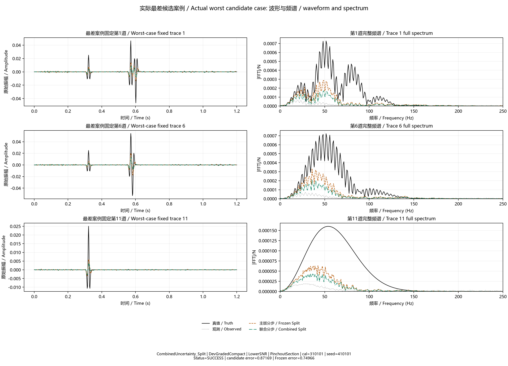

全部原始行保留于 metrics_all_rows.csv。图中区间为描述分位数，不代表统计置信度。All rows remain available; quantiles are descriptive. Manifest

Four panels compare every method for each model in Main and LowerSNR, separately for Direct and Split. Points are finite-row means, vertical lines span the empirical 10th–90th percentiles. Numerical failures with finite scores remain included; nonfinite counts are explicit.

Six panels display paired absolute changes in event amplitude, weak-event, pinchout-tail, AVO intercept, AVO gradient and fault-neighborhood errors. Small circles show model means, larger method symbols show the equal-model average. Missing and inapplicable entries are counted together and retained in source data.

The actual largest finite RelativeError among the three declared candidate Split branches is shown beside its same-observation Frozen Split, truth and observation. Selection uses maximum error, including finite solver-failed results, with deterministic tie breaks; it does not choose an attractive example. The key, status and errors are printed. All panels share an unclipped absolute amplitude maximum.

For the same actual worst finite candidate Split case, fixed traces 1, 6 and 11 show the full-time raw waveforms and unsmoothed full-Nyquist spectra of truth, observation, the candidate and its matched Frozen Split. The case identifiers, solver status and candidate/Frozen errors are printed. Trace choice is fixed rather than selected by the appearance of failure.